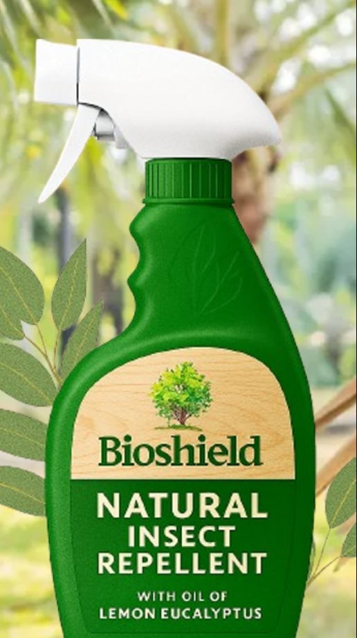
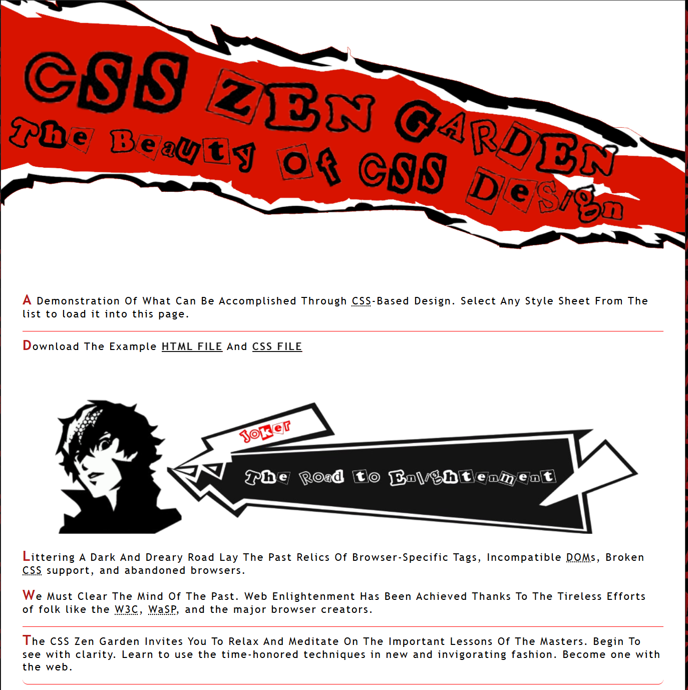
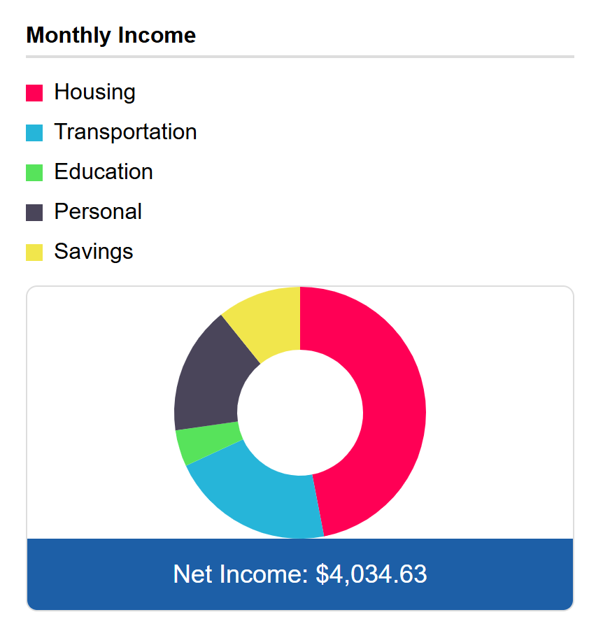

Click the image to read more
Click the image to read more
Click the image to read more

Project 1 BioShield
https://bioshieldyeah.netlify.app/
The first website that I worked on alongside a partner replicating a bug repellent store.
- The Problem: We tried to figure out the main color palette of the website.
- The Solution: We researched other bug repellent websites and figured out what colors would work best with our main motto and represent the site well.
- The Problem: With a small amount of knowledge in CSS, it was a bit difficult to style the website.
- The Solution: We searched up different CSS selectors and the main syntax of CSS, trying to figure out what we can style.
- The Problem: HTML was something that we knew already, but figuring out what each element should be semantically was an issue.
- The Solution: Websites like MDN and W3Schools helped out a lot with deciding what a “div” should be semantically.
- Semantic Architecture: During this time, I only knew HTML, so I minimized the use of divs as much as I could.
- AI Literacy: At the time, I did not know how to code CSS3 and JavaScript, so me and my assigned partner used it to help style and code, expanding our knowledge too.
- Graphic Design: In Adobe, I had to create images of fake bug repellents to represent our products.
- Persistence: Although we didn’t know CSS at the time, trying to figure out the syntax and elements to style the website was difficult. Trying to persevere through these challenges helped me gain a better understanding of the CSS even if we hadn’t learned it.
- Communication: I had to work with another student to complete this project, communicating any potential problems with the website or website designs.

Project 2 Zen Garden
https://github.com/CartWebApp/css-zen-garden-JustinSabangan
A web design project created to demonstrate CSS to an unchanged HTML file
- The Problem: Using all the selectors in a meaningful way to contribute to my design of the website was difficult.
- The Solution: I tweaked the little things such as font size and details that might elevate the aesthetics.
- The Problem: Finding an aesthetic that I wanted to use was pretty difficult. I spent hours trying to find a theme for my design.
- The Solution: I thought about the media and entertainment that I really liked and looked at those aesthetics closely, which helped me finally decide on the aesthetic.
- CSS Styling: I had a basic knowledge of CSS selectors and only knew a few. In this project, my understanding increased and the usage of 42+ selectors helped my knowledge overall.
- Graphic Design: For my main aesthetic, I had to design graphics for my headers. based on a video game aesthetic that I found to be cool to use.
- Creativity and Innovation: Designing graphics and how I would execute my design expanded my creativity.
- Application of Past Knowledge: Previously, I had done many CSS exercises to help me with layouts, so I applied that knowledge to help change the layout of my design.

Project 3 Budget Calculator
https://eecu-budget-calculadora.netlify.app/
A web-based budget calculator representing EECU that helps users calculate their expenses and manage their finances in a simple way.
- The Problem: I struggled with figuring out how to code a live visual chart in JavaScript
- The Solution: I looked at the chart.js website to get some help on setting it up and did an exercise to understand the logic.
- The Problem: Many students worked on my project and rotated through each person. The problem that came from this was that when someone didn’t fully complete what they wanted to do on my website, they didn’t leave a comment, leaving the next person to possibly mess up the site or change something.
- The Solution: I had to tell the next person what they did and didn’t finish
- The Problem: Styling the website was difficult because I had to make the layout accurate to the Figma.
- The Solution: Eventually, I had to compromise and go for a different layout, which was fine and was similar to what I had prototyped.
- Persistence: Doing some of the code and styling it took a lot of time. Overall, the coding was really challenging, but I just kept going no matter what.
- Communication: During the project, many other students helped code my website, so I had to communicate with them to get what I wanted out of their work time.
- Creativity and Innovation: Designing graphics and how I would execute my design expanded my creativity.
- Application of Past Knowledge: Previously, I had done many CSS exercises to help me with layouts, so I applied that knowledge to help change the layout of my design.